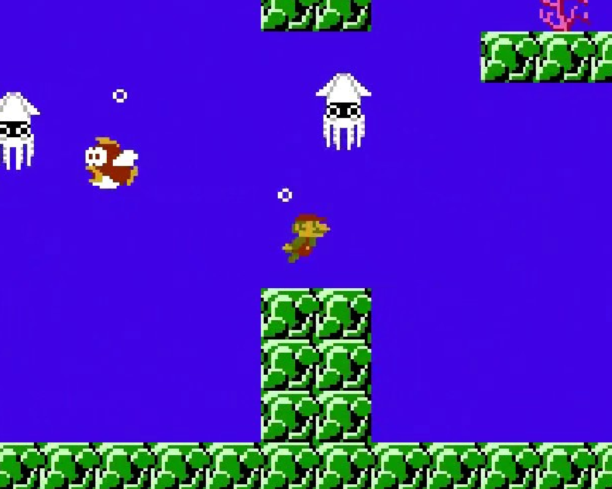
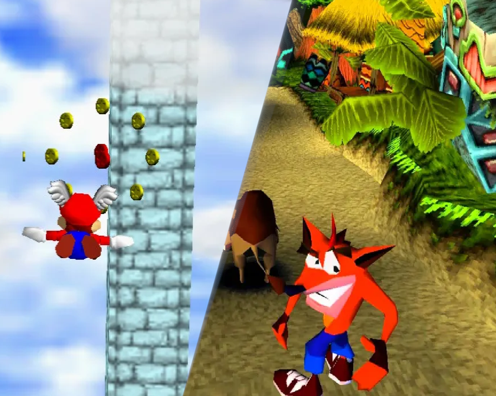

Tv-spel, en gång en nischad underhållningsform, har utvecklats till en global kulturkraft som påverkar konst, musik, film och samhälle. Denna artikel tar dig med på en resa genom tv-spelens historia, från deras blygsamma början till dagens moderna mästerverk.
Tv-spelens historia börjar på 1970-talet med lanseringen av de första kommersiellt framgångsrika spelen. Ett av de tidigaste exemplen är "Pong", ett enkelt tvådimensionellt spel där spelarna styrde paddlar för att slå en boll fram och tillbaka över skärmen. "Pong" släpptes av Atari 1972 och blev snabbt en sensation, vilket satte igång en våg av arkadspel som skulle dominera decenniet.
Vid den här tiden var tv-spel främst en arkadupplevelse. Spelhallar fylldes med spel som "Space Invaders" (1978) och "Asteroids" (1979), som erbjöd en snabb, adrenalinpumpande underhållning. Dessa spel introducerade grundläggande spelmekanik och etablerade tv-spelet som en populärkulturell kraft.
1980-talet markerade en övergång från arkadhallarna till hemmet. Nintendo, ett japanskt företag som tidigare tillverkade leksaker och spelkort, släppte Nintendo Entertainment System (NES) 1983 (i Japan som Famicom). NES blev en enorm framgång och introducerade världen för ikoniska spel som "Super Mario Bros". (1985), som etablerade sidscrollande plattformsspel som en populär genre.
Under samma decennium såg vi även introduktionen av andra konsoler som Sega Master System och Atari 2600, men det var Nintendo som dominerade marknaden. Nintendo etablerade också den välkända karaktären Link genom spelet "The Legend of Zelda" (1986), som var banbrytande med sitt öppna spelupplägg och fokus på äventyr och utforskning.
1990-talet präglades av tekniska innovationer som ledde till utvecklingen av tredimensionella spelvärldar. Sony PlayStation, lanserad 1994, blev snabbt en av de mest populära konsolerna genom tiderna. Med titlar som "Final Fantasy VII" (1997) och "Metal Gear Solid" (1998) revolutionerade PlayStation spelindustrin med sina filmiska berättelser och avancerade grafik.
Nintendo svarade med Nintendo 64 1996, som introducerade spel som "Super Mario 64" och "The Legend of Zelda: Ocarina of Time" (1998). Dessa spel utnyttjade den nya 3D-tekniken till fullo och satte standarden för hur moderna tv-spel skulle designas.
1990-talet var också tiden då PC-spel började växa i popularitet, med titlar som "Doom" (1993) och "StarCraft" (1998) som lade grunden för förstapersonsskjutare och realtidsstrategispel.
Med bredbandets framväxt under 2000-talet blev online-spel alltmer populärt. Xbox Live, lanserat av Microsoft 2002, revolutionerade online-spelande genom att erbjuda en plattform för multiplayer-spel på konsoler. Spel som "Halo 2" (2004) blev enorma framgångar och visade potentialen i online-gemenskapen.
Samtidigt fortsatte Sony och Nintendo att driva gränserna för vad som var möjligt med spelkonsoler. PlayStation 2 (2000) blev den mest sålda konsolen genom tiderna, medan Nintendo Wii (2006) introducerade rörelsekontroller och nådde en bredare publik än tidigare.
PC-spel fortsatte också att utvecklas, med spel som "World of Warcraft" (2004) som definierade genren för massivt multiplayer-online-rollspel (MMORPG) och lockade miljontals spelare världen över.
Under 2010-talet har tv-spel blivit mer mainstream än någonsin. Sony PlayStation 4 och Microsoft Xbox One, båda lanserade 2013, erbjöd kraftfull grafik och förbättrade online-tjänster, vilket gjorde spelupplevelsen mer uppslukande och social.
Indiespel fick också ett genombrott under detta decennium, med titlar som "Minecraft" (2011), "Undertale" (2015) och "Celeste" (2018) som visade att små team kunde skapa innovativa och kritikerrosade spel.
Virtual Reality (VR) och Augmented Reality (AR) började också ta fart med lanseringen av enheter som Oculus Rift och PlayStation VR, vilket öppnade nya dimensioner för spelupplevelser.
När vi går in i 2020-talet ser vi att tv-spel fortsätter att utvecklas i snabb takt. Cloud gaming, där spel streamas direkt till enheter utan behov av kraftfull hårdvara, börjar bli mer vanligt med tjänster som Google Stadia och Xbox Cloud Gaming. Samtidigt fortsätter e-sport att växa och etablera sig som en viktig del av både underhållningsindustrin och den globala sportscenen.
Tv-spelens historia är en berättelse om ständig innovation och kreativitet. Från enkla pixlar till komplexa, fotorealistiska världar har tv-spel utvecklats från en nischad hobby till en global kulturkraft. Och med tekniska framsteg som fortsätter att driva gränserna framåt är det spännande att tänka på vad framtiden har att erbjuda.